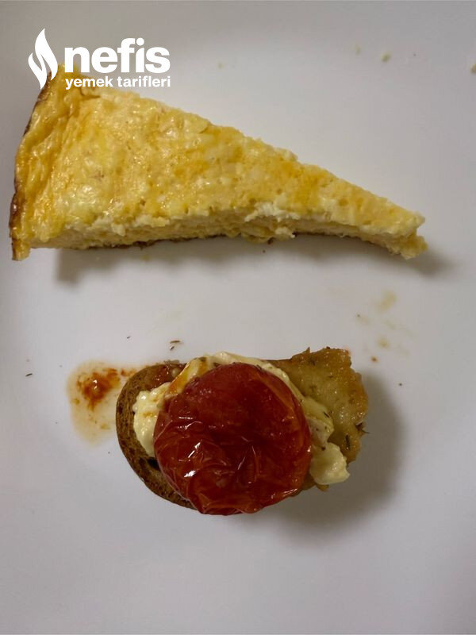

🍽️ 6-8 kişilik⏱️ Hazırlık: 10 dk🔥 Pişirme: 30 dk🏷️ Aperatifler
Malzemeler
- Brie peyniri
- Çeri domates
- 1-2 diş sarımsak
- Baget ekmek
- Yarım fincan zeytinyağı
- 1-2 dal biberiye
- Kekik
Hazırlanışı
- Yağlı kağıt serdiğimiz borcamın ortasına brie peynirini yerleştiriyoruz.
- Bıçakla dibine ulaşmayacak derinlikte bıçakla 8 parçaya bölüyoruz.
- İnce ince de doğradığımız sarımsakları kestiğimiz aralara yerleştiriyoruz.
- Etrafına çeri domatesleri diziyoruz.
- Domateslerin etrafına dilimlediğimiz ekmekleri yerleştiriyoruz.
- Ekmeklerin üzerine kaşıkla zeytinyağı gezdiriyoruz.
- Üzerine kekik serpiyoruz.
- Peynirin üzerine biberiye koyuyoruz.
- Ekmekler kızarıncaya kadar pişiriyoruz. Sıcak sıcak tüketiyoruz.